The Workmate WM625 is readily recognizable by its combination of cast-aluminum H-frames with a blue painted steel frame and legs. The cast H-frames on the WM625 are reversed from their orientation on the WM325—the "Workmate" sides face outward, while the "Black & Decker" sides face inward.
The WM625 was produced for the UK and European markets in Black & Decker's Kildare, Ireland factory which was built in 1975 specifically to manufacture the Workmate. The WM625 was produced in seven Types identified as Type E01 to E07Z, plus one more that I have not identified yet. The changes between the first four Types were fairly small, so at a glance it can be hard to spot the differences.
Types E01 through E04 have their model number and Type etched into the top surface of the metal footrest along its back edge, along with "MADE IN REPUBLIC OF IRELAND". Type E05, E06, and E07Z have the model and Type as an ink stamp on the bottom surface of the wooden vise jaws. Examples of these markings are shown in the photos below.
For the first four Types, all eight feet are the screw-in adjustable style. The footrest has four narrow ribs running along its length. The jaws are attached to rectangular aluminum mounting blocks. The top-release levers use a torsion spring mounted concentric with their pivot point. The catch for the folded position is a small two-piece part with hooks, mounted farther back in the top-bracket assembly. The H-frames are attached to the steel frame with screws. The vise handles have the "B&D" logo cast into them.
The WM625 was introduced in 1976 and was sold until the early 1980's, based on what I have found in Argos catalogs of the period as well as newspaper ads and articles.
Black & Decker Workmate WM625
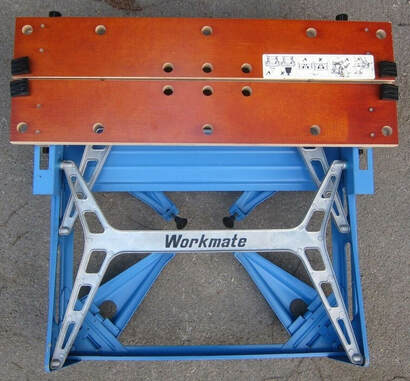
WM625 E01
The WM625 Type E01 can be recognized by its double-layer jaws made of 11/16" 13-ply plywood. The other Types that follow the E01 have single-layer jaws. To mount the jaws, there are two nuts recessed into their surface a couple of inches from each end. These accept screws that come through the rectangular aluminum mounting blocks below.

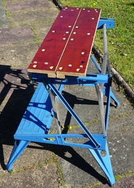
The only WM625 Type with double-layer jaws

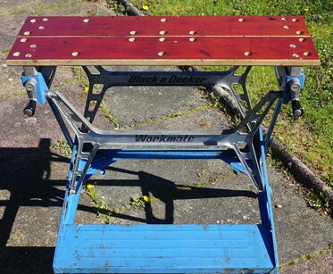
Extra holes in the top for nuts to attach the jaws

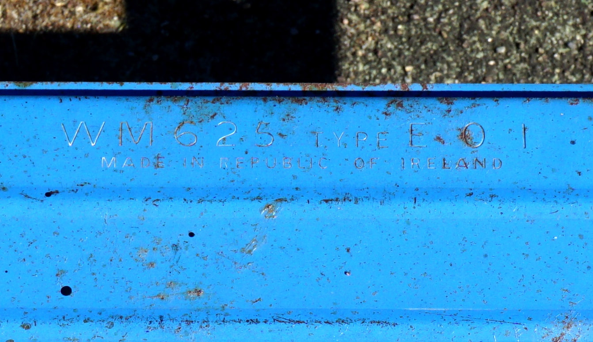
Stamped into the rear edge of the step
WM625 E02
The WM625 E02 seems to be identical to the Type E01 except that it has single-layer jaws made of a thicker 13/16" 17-ply plywood. This UK Workmate was sold for a short time in North America during 1976 as the 79-001 Type 3.

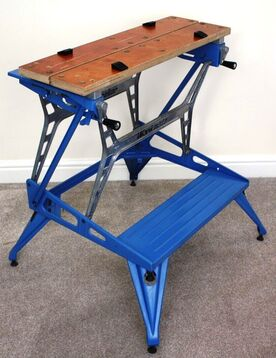
Jaws reduced to a single layer

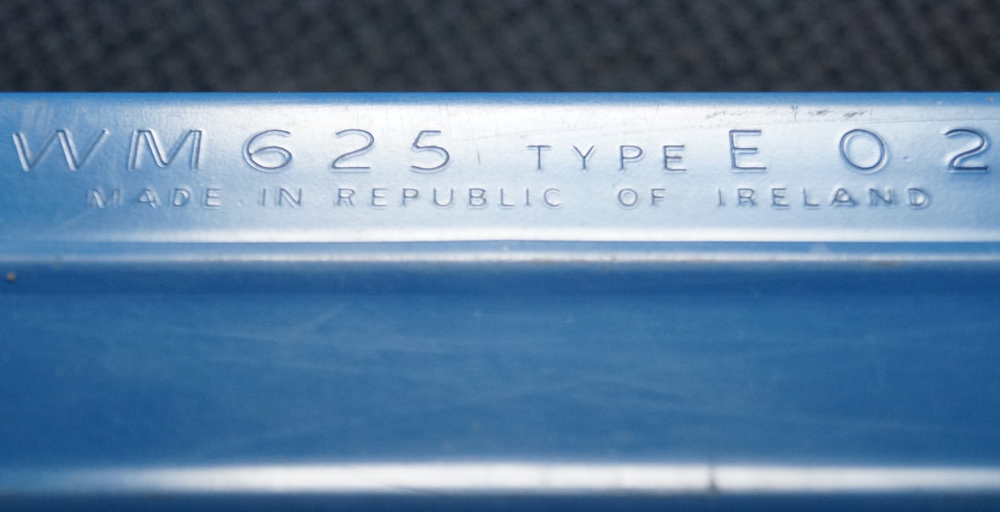
Stamped into the rear edge of the step

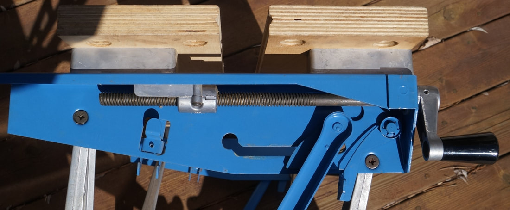
One latch to hold the Workmate upright (on the right with torsion spring) and another to hold it folded (on the left with hooks), H-frames attached with screws

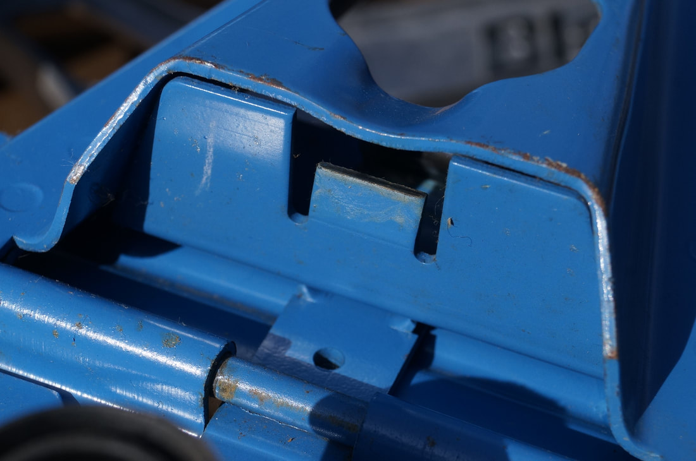
Top end of the folding leg; compare this with the Type E04 below to see subtle changes.
WM625 E03
On the Type E03 the jaws are mounted slightly differently. Instead of holding the jaw by using a nut recessed into the top of the jaw, the jaws themselves are tapped to accept the machine screws. The result is that the mounting holes visible in the top of the jaw are smaller, only about 1/4" instead of the 5/8" holes previously needed to hold the nuts.
The torsion spring for the top release levers was modified in shape with the addition of a small bend near the end that presses on the lever. That bend is now captured in a slot in the lever to hold the spring more securely. Previously it was common for the end of the spring to slip off of the lever.
There was also a minor change to the feet, switching from a grooved post to a smooth one.
The torsion spring for the top release levers was modified in shape with the addition of a small bend near the end that presses on the lever. That bend is now captured in a slot in the lever to hold the spring more securely. Previously it was common for the end of the spring to slip off of the lever.
There was also a minor change to the feet, switching from a grooved post to a smooth one.

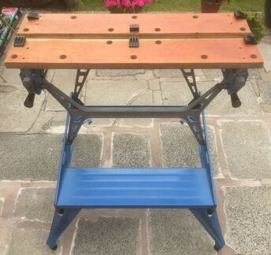
Smaller jaw-mounting holes are barely visible

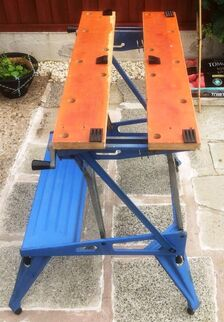
All eight feet are screw-in/adjustable

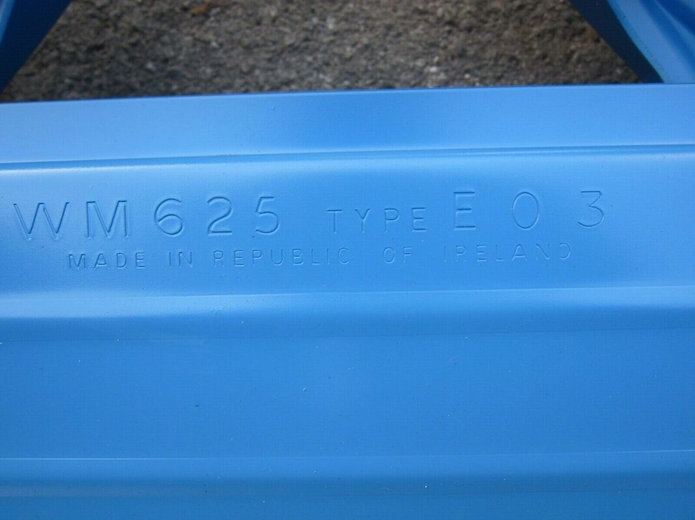
Stamped into the rear edge of the step


WM625 E04
The changes in the E04 were in the construction of the top of the legs. They were reshaped slightly so that they meet the lower frame at a steeper angle, raising the overall height of the Workmate by about 3/4 of an inch. The interior portion of the upper leg that engages with the spring clip had to be revised for the change in angle. This UK Workmate was sold for a short time in North America during 1977 (with the cross-ribbed footrest of the E05) as the 79-001 Type 5.

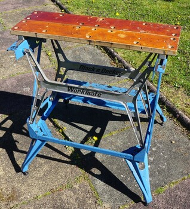
The legs are a little more upright, raising the height a little

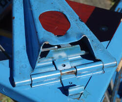
Slightly revised upper part of the legs
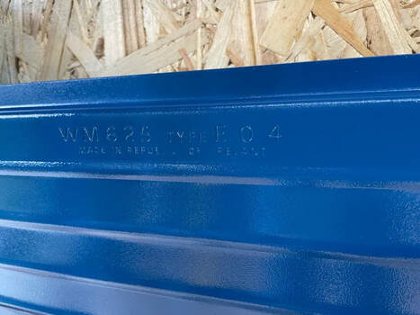
Stamped into the rear edge of the step
WM625 E04.5?
I have identified one Type of the WM625 that I have never seen a Type marking on, so I'm not sure what to call it. It appears to fall between Types E04 and E05, so for now I'm calling it E04.5 I have found one of these with a guarantee card showing that the owner purchased it January 24, 1979, another that was purchased in March 1979, and a third with "27 2 80" stamped in ink on the bottom of the wooden jaws, indicating that this Type was probably made throughout 1979 and continued into 1980.
It continues the top-release levers with the slot in them and the torsion springs with the matching bend from the E04. The mounting blocks holding the jaws changed to a dogbone shape instead of a plain rectangle. The vise handles were changed, eliminating the "B&D" logo. The metal core of the plastic vise knobs was removed leaving the knobs with a hollow center. The screw-in feet on the ends of the legs were replaced with fixed rubber boots.
This Type has three characteristics not seen on any of the other Types:
If you have one of these WM625's with a Type number marking, please contact me.
It continues the top-release levers with the slot in them and the torsion springs with the matching bend from the E04. The mounting blocks holding the jaws changed to a dogbone shape instead of a plain rectangle. The vise handles were changed, eliminating the "B&D" logo. The metal core of the plastic vise knobs was removed leaving the knobs with a hollow center. The screw-in feet on the ends of the legs were replaced with fixed rubber boots.
This Type has three characteristics not seen on any of the other Types:
- Two large black latch pieces that hold the Workmate closed. These pieces are installed by the owner into a pair of holes in the upper frame side pieces; they are not permanently attached. They are missing on many of the WM625's of this Type that I have seen, meaning that these Workmates cannot be latched in the folded position!
- A plated domed steel cap at the pivot point of the top-release latch.
- The ribs on the footrest have a center section of cross-ribbing. Unlike those on the Type E05, the two sets of ribs intersect each other.
If you have one of these WM625's with a Type number marking, please contact me.

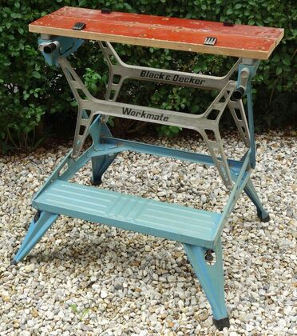
Rubber boot feet at the ends of the legs, no B&D logo on the vise handles, and hollow knobs

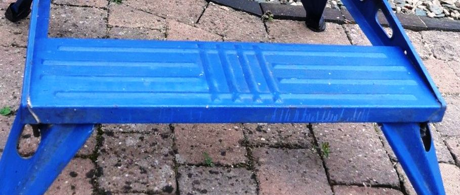
A closer view of the intersecting rib pattern

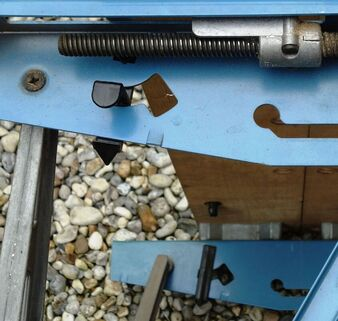
Note the two black latches, one on each of the upper frame pieces

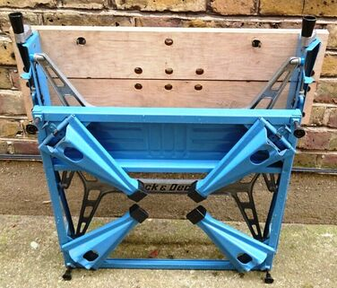
Date "27 2 80" stamped on the wooden jaw.

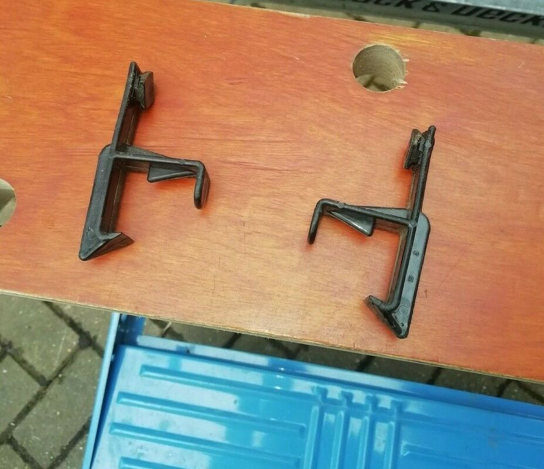
The black latches detached from the frame

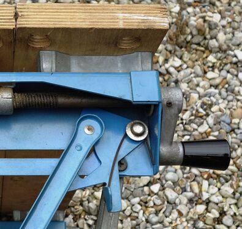
The dog-bone-shaped jaw-mounting block and the plated domed cap at the pivot.
WM625 E05
The Type E05 introduced a new mechanism for folding and unfolding the Workmate. Instead of having one latch to hold the Workmate upright and another to hold it in the folded position, these two functions were combined into a single latch. The upper frame bracket pieces were modified for the new latch design. The top-release lever attaches and pivots at the upper attachment point of the side stay instead of using a dedicated hole. The lever has a coil spring attached along the lower edge of the side stay, instead of the original torsion spring. Slots were added to the front vertical surface at both front corners of the footrest. When the Workmate is folded, the top-release latches hook into these slots to lock it in that position.
The ribs on the footrest were flattened, now with squared-off ends, and they don't intersect each other. The mounting blocks holding the jaws changed to a different style of dogbone shape, with a narrower center connector.
The ribs on the footrest were flattened, now with squared-off ends, and they don't intersect each other. The mounting blocks holding the jaws changed to a different style of dogbone shape, with a narrower center connector.

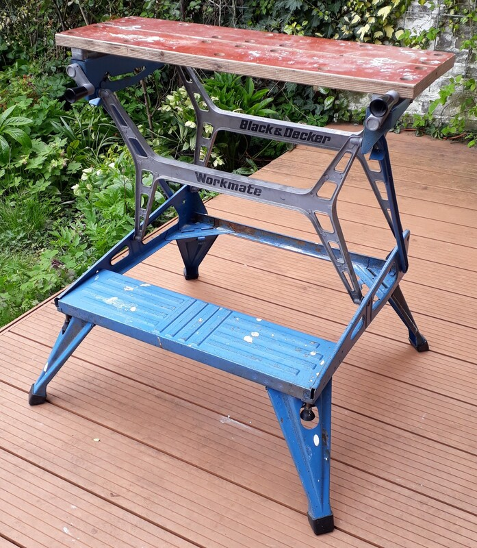
Flattened and squared off ribs on the footrest.

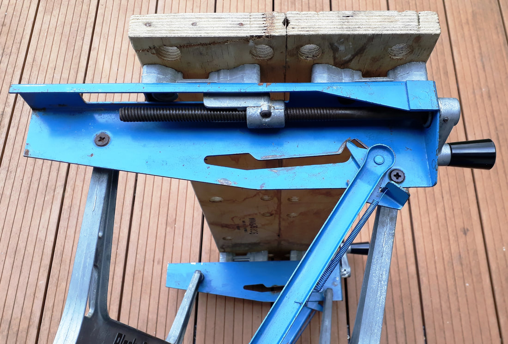
"Dogbone" riser blocks for the vise jaws, revised latch assembly with coil springs along the side stays

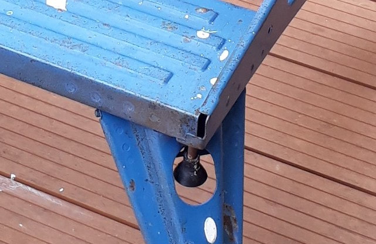
Slot in the front corner to latch the Workmate folded.

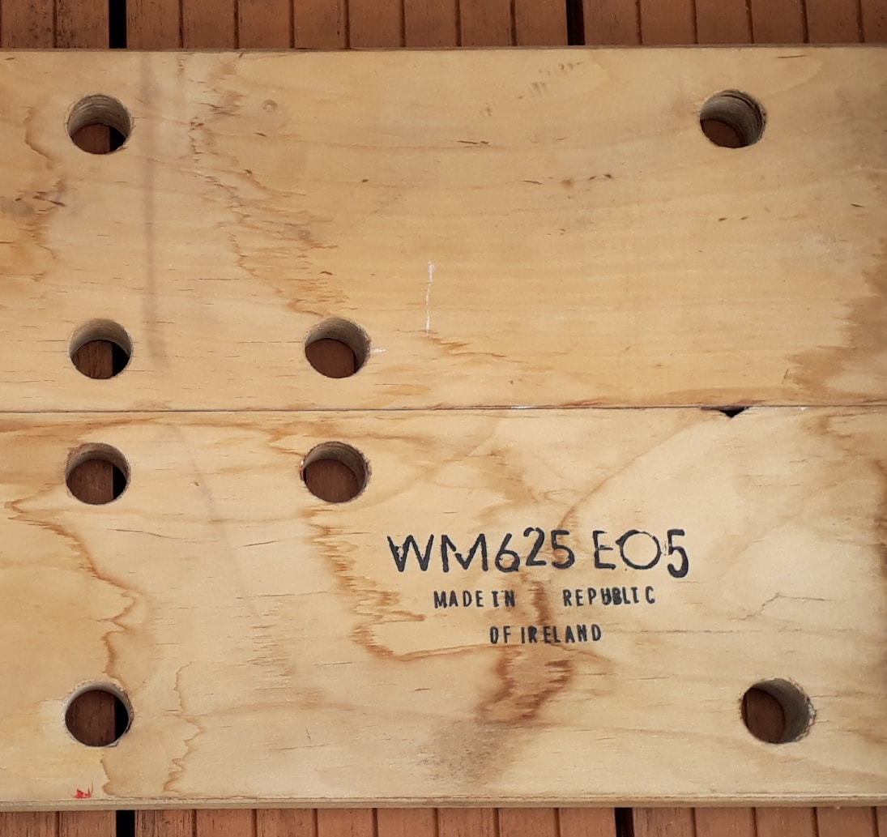
Ink stamp on the bottom of the vise jaws
WM625 E06
A few changes are evident on the Type E06. The four screw-in feet on the corners of the frame were replaced by solid corner feet with small rubber boots. Most of these boots have worn out and fallen off.
The upper part of the legs was reshaped to accommodate the corner feet, and the clearance holes that had been needed for the screw-in feet were eliminated. The clips holding the legs in place were changed from metal to plastic. The H-frames are attached to the frame with rivets rather than screws.
The upper part of the legs was reshaped to accommodate the corner feet, and the clearance holes that had been needed for the screw-in feet were eliminated. The clips holding the legs in place were changed from metal to plastic. The H-frames are attached to the frame with rivets rather than screws.

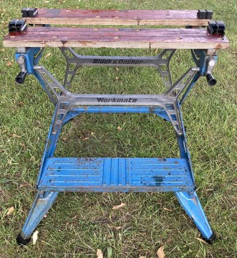
Note the reshaped legs to clear the corner feet just above them

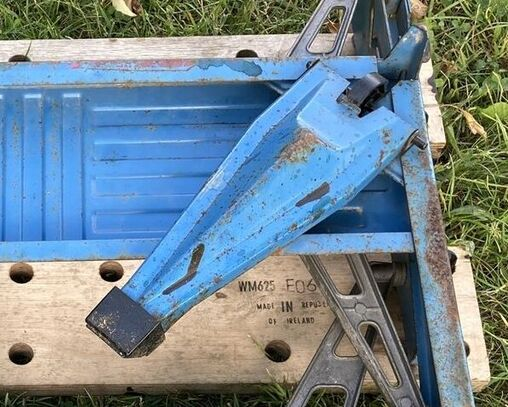
Reshaped leg, plastic leg latch, corner foot, and ink stamp on the bottom of the jaws

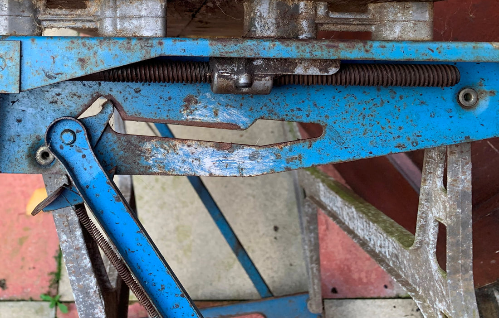
The H-frames are now riveted to the frame
WM625 E07Z
I've seen photos of only a few of these, and the only change I see from the E06 is a plastic pivot nut replacing the aluminum one. The U.S. model 79-001 made this same change in July, 1977. The orange knob on this one is a replacement.